Rain Barrels for Watering Your Garden
Rain Barrels for Watering Your Garden or extra water in the case of an apocalyptic event :-)
Water from your roof can be used in multiple ways. Assuming that you have a roof that has been installed for a while the water is pretty much clean and is good for your plants. If you are looking to drink the rainwater, you should take precautions before using it for human consumption.
The only extra tool I had to buy was a 2 inch hole saw to cut holes in the side of the rain barrels.
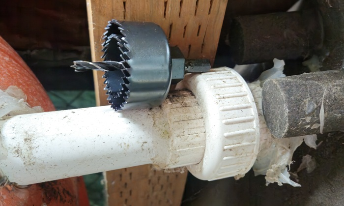
Step 1 - Figure out what size barrels you want or need. Jessica Wildfire reminded me that I needed to write this project up when she wrote an excellent Illustrated Rain Harvesting Guide. The four barrels I set up are about 250 gallons total, used exclusively for watering the landscape and garden. Bought two barrels first then expanded to four barrels. I could add more barrels using the same idea.
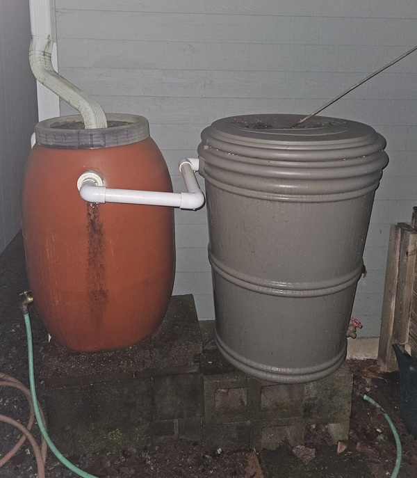
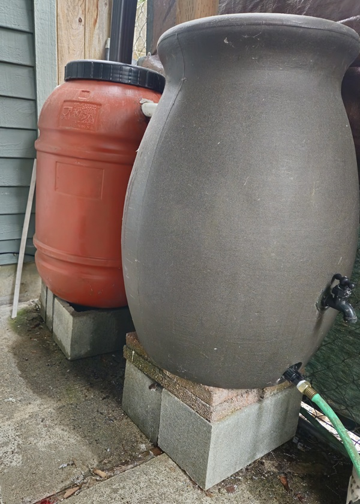
Step 2 - Situate the barrel (the orange ones in the above pictures) near the drain that the rain gutter drains into and directly BELOW the rain gutter pipe. I had to buy a gutter elbow to attach to the drain from the roof rain gutter into the barrel (the green part / pipe above the barrel). Place the barrel on cinder blocks to help you with levelling the barrel, allow access to the spigot at the bottom of the barrel, and to adjust the height. The higher the barrels are relative to your landscape the faster the water will drain out. If the barrels are even with the landscape it will take FOREVER to drain the water out. If the barrels are BELOW the landscape the water will never flow out. You may have to cut a hole in the lid to the barrel to allow the water to get in (I forget if this hole was already there or not):
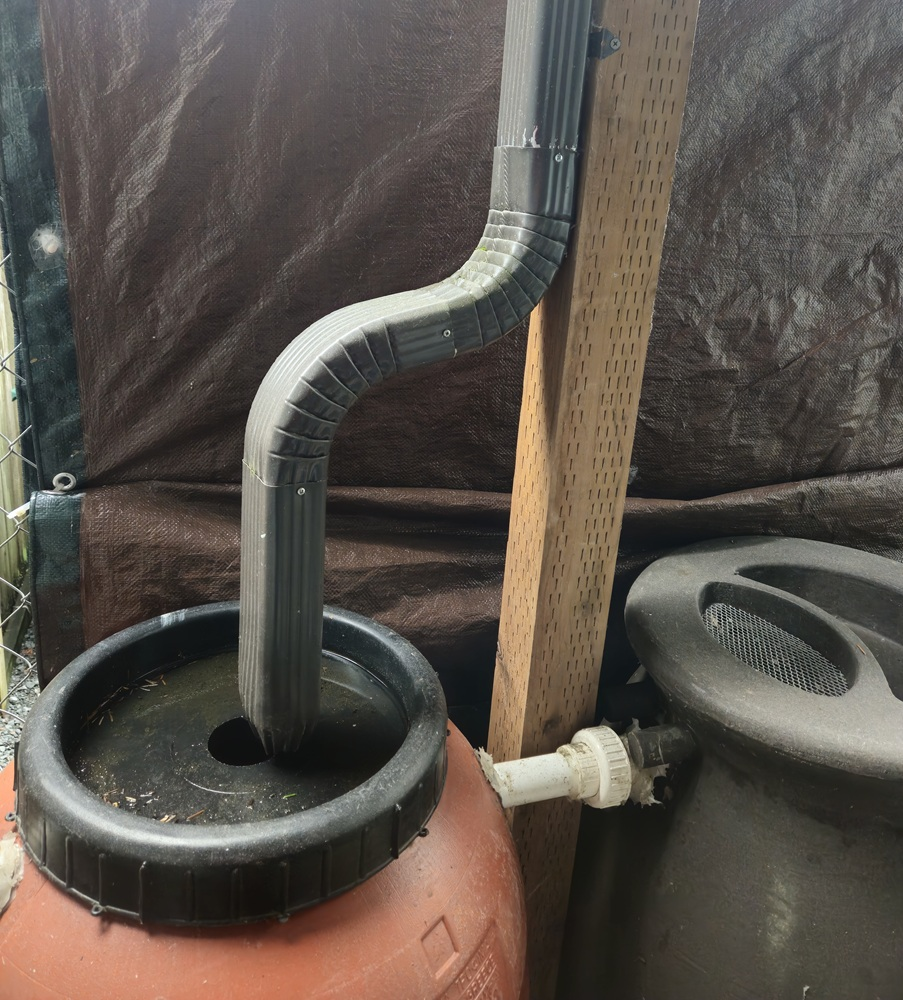
Step 3 - Create / install the overflow tube. This tube will allow water to flow out of the barrel when it is full and into the drain. Get 2 inch schedule 20 or 40 PVC pipe. This is a VERY low pressure system so you will not need schedule 40. Schedule 40 (or any other schedule) will do if there isn't schedule 20 at the store, it will just be a little more expensive and a little heavier. You will also need some 90 degree elbows, and glue for the PVC. I like the purple two part glue but it really doesn't matter as long as it is for PVC. It is messy no matter HOW careful you are. CAREFULLY drill a hole as high up on the barrel as close to the top as possible, as straight in as possible (NOT at an angle). Connect a 90 degree elbow to a short piece of pipe and glue on a longer piece of PVC pipe that runs into your Rain water drain, this is the pipe BEFORE it is installed and AFTER it is installed. I put waterproof silicone sealant around the pipe to stop water leaking out from around the pipe, it kinda sorta works. If you cut the hole correctly it has a pretty good seal. If you only need one rain barrel then connect a hose to the faucet of the rain barrel (at the bottom) and you are done:
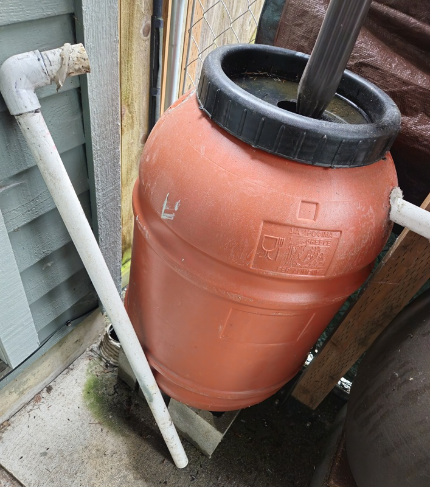
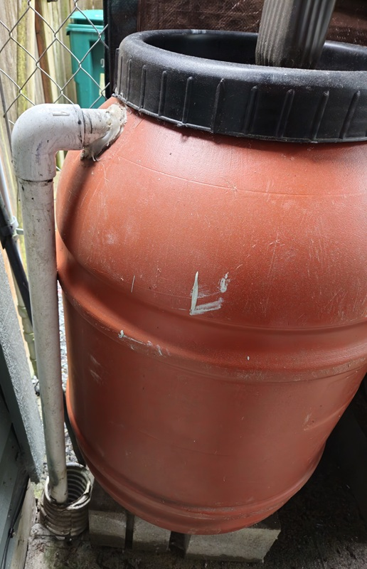
Step 4 - Add a second barrel. This is not much more work. Build another cinder block platform for the second barrel. Add paver stones on top of the cinder blocks (to either the first or second barrel) so that the tops are approximately even.
Step 5 - Add the connecting pipe between the barrels. Drill a hole in both barrels ONE PIPE DIAMETER BELOW the overflow tube. This ensures that your second barrel fills before water flows out the overflow. See the red line in the below picture and you can see the connecting pipe is below the overflow tube. If your connecting pipe is a little lower no big deal, the lower you go the more it will tend to leak around the pipe. You also see the pipe that connects the two barrels, this is a PVC slip union coupling (no threads, you glue the pipe into each half of the coupling) that under ideal situations will allow you to separate the two barrels if needed, like for cleaning, without having to remove the pipe. It helps some. Again you can try to seal with the silicone adhesive, it sometimes works but if not there isn't much leakage around the pipe:
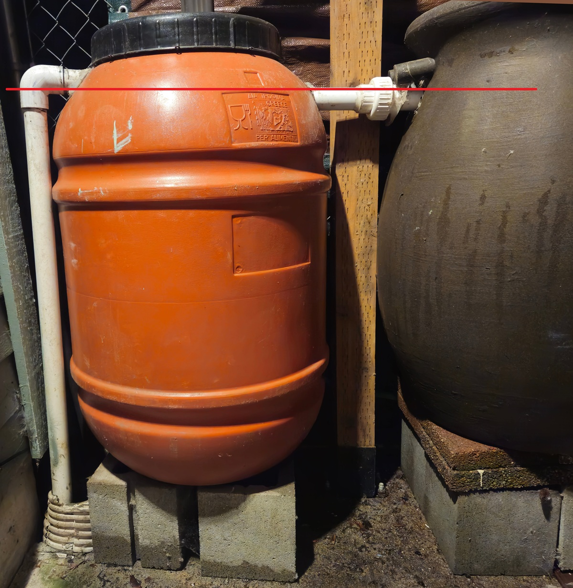
Originally my second set of rain barrels were connected just like the above, but they were arranged next to the house and further away. This worked fine when they were next to the potting shed which stood away from the house also. The potting shed, however, went away and it was determined that BOTH rain barrels should be up under the rain gutter / eaves next to each other. Rather than cut more holes in the barrels, try to patch the holes that were no longer filled, some other scheme, I just glued together a pipe with three 90 degree elbows and left the holes in the barrel alone. Is it ugly? Indeed it is. Did it work? Yes:
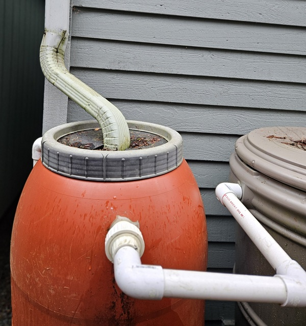
And here is the coupling between THOSE two barrels taken apart so that you can see what that looks like (with water pouring out):
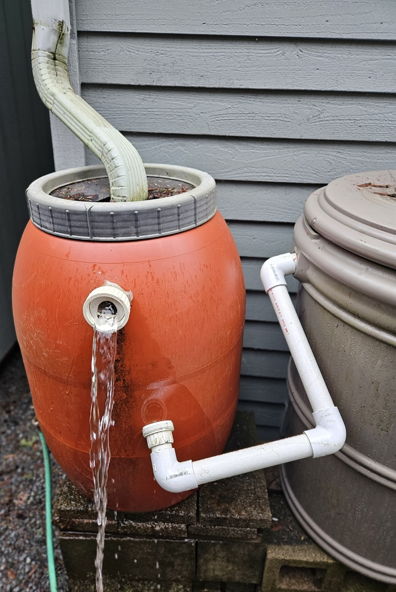
Finally, in the first picture of the grey rain barrel you see a little bamboo stick sticking out. That is my quick indication of how much water is in the rain barrel. If the stick is flopped over like it is in the first picture the barrel is full. The stick is long enough that it ALWAYS sticks out the top of the barrel when the lid is on, it floats up and down according to the water level because I have attached a toilet bowl float to the bottom:
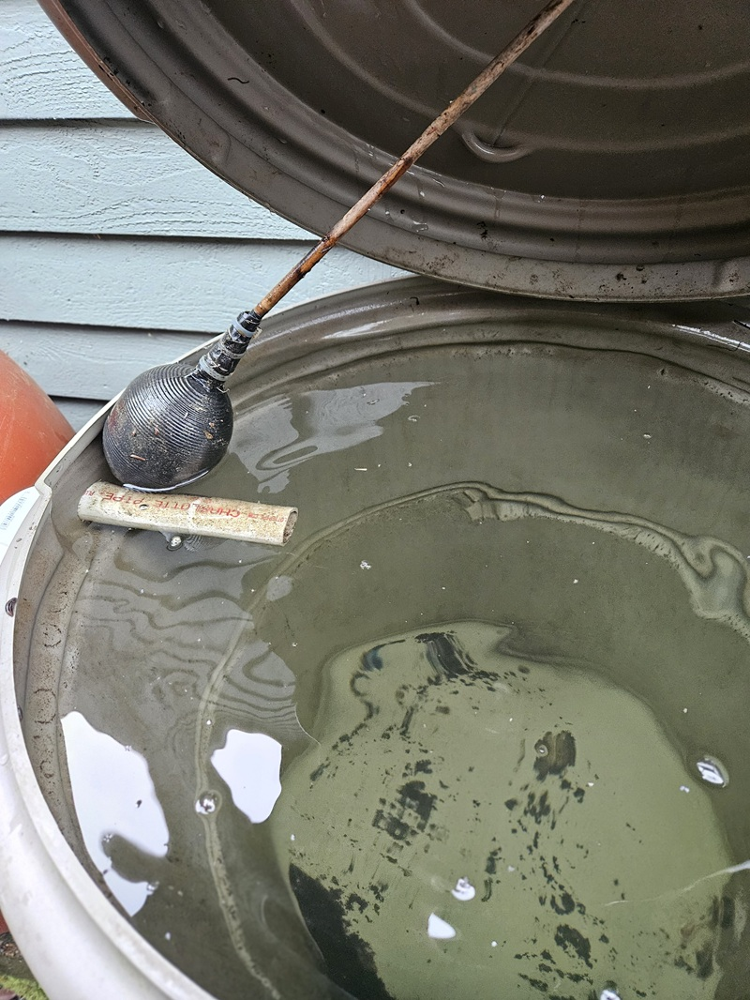
For each of the two rain barrels I connected the faucets together using a manifold so that one hose (rather than two) could be easily run out to the landscaping, this way you also get to choose to empty one barrel or both:
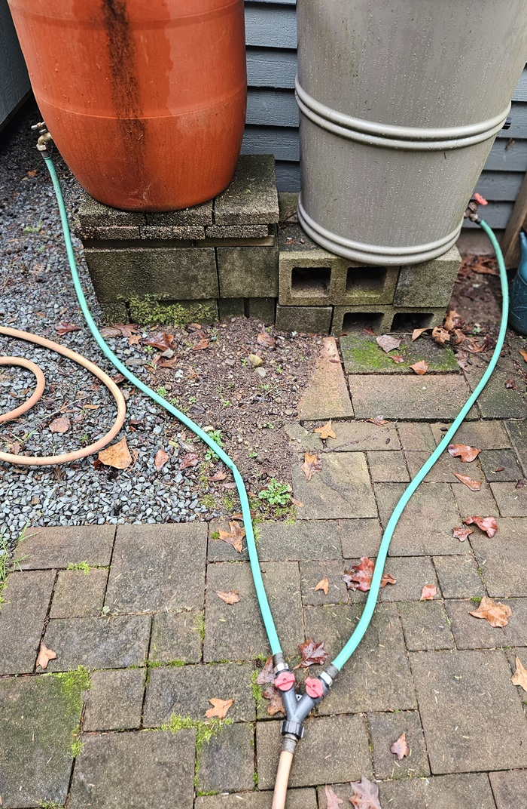
As you can see there isn't much sediment at the bottom of the barrel. I take them apart every couple of years and hose out the sediment and clean off the green gunk buildup. Hence the warning at the very start that you will definitely want to sterilize / clean / filter this water if in an emergency you have to drink it.
For winter shut off the faucets at the bottom of the barrels and empty the water out of the line so that you don't crack the hoses by water freezing and thawing inside. In VERY cold climates you should drain the barrels before winter and keep them empty as they might freeze solid and redirect the rain gutters directly into the drain. I don't live in an area where this would be a problem so my design didn't take this into consideration.
As always feel free to send me comments (my e-mail address is on the main page).
Main Page